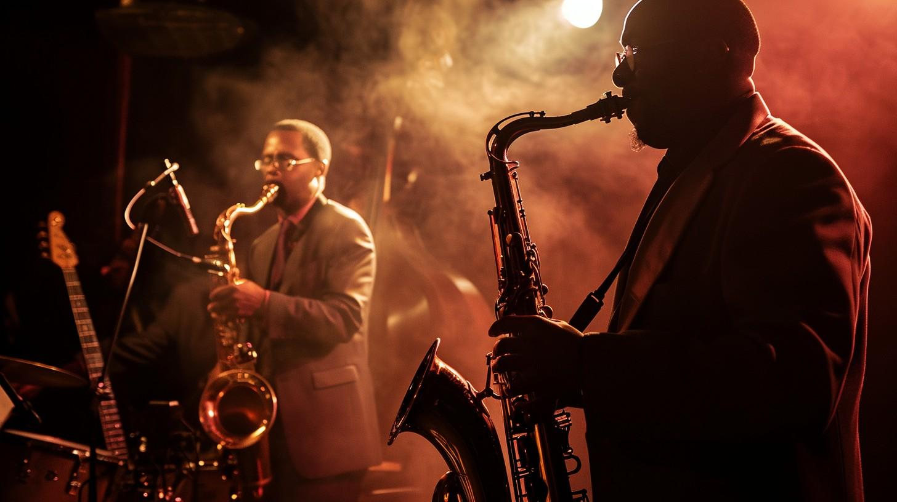

Marco Carro Peyper - 2º SMR
Actividad 15: Animaciones
Requisitos de finalización
Siguiendo con el documento que hemos usado en las actividades anteriores, en este caso actuaremos sobre el rótulo principal. Para dar sensación de más realismo, trataremos de simular que el neón se apara durante un instante, cada 20 segundos.
Para lograrlo, durante un 1% de esos 20 segundos, el rótulo se mostrará en un color mucho más oscuro que el usado de forma predeterminada y se eliminará la sombra. Después, volverá a la normalidad.
Además, cuando pongas el puntero del ratón sobre el rótulo, ocurrirá algo similar, pero cada medio segundo.
Una noche inolvidable.

Llena de música que te hará bailar.